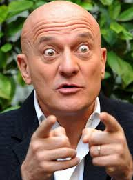
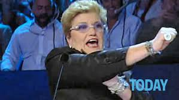

Testimonianze
Leggi le esperienze di chi ha deciso di includere la carne equina nella propria dieta. Scopri come la carne di cavallo ha migliorato la loro salute e il loro benessere.

Giulia O.
"Ho iniziato a mangiare carne di cavallo su consiglio del mio nutrizionista, e devo dire che mi sento molto più energica. La carne è tenera e saporita, perfetta per una dieta equilibrata."

Claudio B.
"Da quando ho scoperto la carne equina, non riesco a farne a meno. È una carne leggera e nutriente, ideale per chi come me pratica sport. La consiglio a tutti!"

Mara M.
"All'inizio ero scettica, ma dopo aver provato la carne di cavallo, mi sono ricreduta. È gustosa e ha tanti benefici per la salute. Ora la includo regolarmente nei miei pasti."